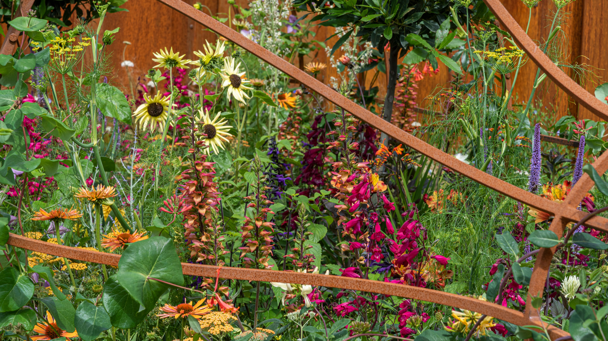

Floral Projects
-
- Garlands: Long, rope‑like floral designs created by wiring or taping greenery and flowers together so they can drape over tables, railings, or arches. They are commonly used for weddings and events to frame spaces, create movement, and add continuous color and texture along surfaces.
- Funeral Easel: A funeral easel arrangement is a standing tribute designed on a wire or wooden easel, usually featuring a strong focal area of blooms and foliage to honor the deceased at visitations or services. These designs are often asymmetrical or spray‑style, using meaningful flowers and colors to convey sympathy, remembrance, and respect.
- Pressed Flowers: Pressed flowers are blooms that have been flattened and dried between absorbent materials like parchment paper inside a heavy book, preserving their color and form for art or keepsakes. They are often used in journaling, framed art, cards, or memorial pieces because they are lightweight and long‑lasting once fully dried.
- Hand Tied Bouquets
Plant identification is the process of figuring out what kind of plant you are looking at by checking its leaves, flowers, stems, and growth pattern. People often use field guides or plant apps to help compare these features and make a match.

In floral design, common tools include floral scissors, pruning shears, wire cutters, floral tape, and a water-filled vase or foam to hold flowers in place. These tools help trim stems, shape arrangements, and keep flowers fresh and secure.

Back to Top